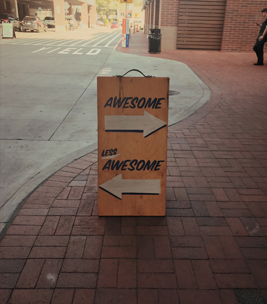

우리는 어떤 분을
모시고 싶어하는가?
그럴 수만 있다면, 더할 나위 없이 영광이겠습니다.
의인불용 용인불의
의심 나는 사람은 쓰지 말고, 쓴 사람은 의심하지 말라는 뜻인데요,중국 사서 송사에 나오는 말로 사람을 모심에 있어 가장 깊게 생각하는 부분이기도 합니다.
우리 팀이 현재 찾고 있는 사람은 어떤 모습일까요?
어쩌면 우리 팀의 이상형일 수도 있겠습니다만, 우리는 아래와 같은 분을 존경합니다.
호오오오옥시라도 가능만 하다면, 그럴 수만 있다면, 아래와 같은 분을 모실 수만 있다면,
더할 나위 없이 영광이겠습니다.
좋은 사람
우리는 좋은 사람이 사람의 더 나은 삶을 위한 착한 서비스를 만든다고 강력하게 믿습니다.어쩌면 너무나도 식상하게 느껴지기도 하는 이 말은, 우리 팀에서 가장 중요하게 가지고 가려 하는 가치입니다.
이유가 무엇일까요?
우리는 사람의 삶을 이롭게 하는 서비스를 만들고 있고, 그 서비스를 만드는 사람은 또한 우리, 즉 사람입니다.
좋은 사람들이 모여 사람들의 삶을 더 좋게 만들려고 하는 서비스를 만드는 것은 결국은 사람이기에,
우리 팀은 좋은 사람이 곧 훌륭한 일을 해낸다는 믿음을 가지고 있습니다.
제가 보증하건대, 우리 팀 식구들은 정말 착합니다.
우리는 격려할 줄 알며, 같이 웃고, 같이 울기도(?) 하는 참 착한 사람들이 모여있습니다.
(저만 성격이 좀 뭐랄까...)
그래서 우리 팀은 좋은 사람을 존경합니다.
좋은 사람들이 모여 사람들의 삶을 더 좋게 만들려고 하는 서비스를 만드는 것은 결국은 사람이기에,
우리 팀은 좋은 사람이 곧 훌륭한 일을 해낸다는 믿음을 가지고 있습니다.
제가 보증하건대, 우리 팀 식구들은 정말 착합니다.
우리는 격려할 줄 알며, 같이 웃고, 같이 울기도(?) 하는 참 착한 사람들이 모여있습니다.
(저만 성격이 좀 뭐랄까...)
그래서 우리 팀은 좋은 사람을 존경합니다.
문제 인지 능력과 문제 해결 능력이 뛰어난 분.
스타트업은 문제로 시작해서, 문제로 끝나고, 다음날 아직 해결하지 못한 문제 위에 또다른 문제가 얹어지기 시작하더니 사채 이자보다 더 빠른 속도로 문제가 쌓여갑니다. 그리고 우리는 그 문제를 하나씩 해결하기 위해 끊임없이 달립니다.즉, 우리는 매일 끊임없이 문제를 해결하고 있는 회사입니다.
문제란, 비단 프로덕트의 문제뿐만 아니라, 회사의 내외부와 관련된 다양한 문제들을 포함합니다.
그렇기에 우리는 문제가 있음을 빠르게 인지하고, 그러한 문제에 직면했을 때, 주저앉는 것이 아니라 어떻게든 해결책을 찾아내는 분을 존경합니다.
우리 팀이 우리 서비스를 통해 해결하고자 하는 것 또한, 어떠한 문제를 해결하기 위해 달리는 것과 같이 말이죠.
그래서 우리 팀은 문제 인지 능력과 문제 해결능력이 뛰어난 분을 매우 존경합니다.
그렇기에 우리는 문제가 있음을 빠르게 인지하고, 그러한 문제에 직면했을 때, 주저앉는 것이 아니라 어떻게든 해결책을 찾아내는 분을 존경합니다.
우리 팀이 우리 서비스를 통해 해결하고자 하는 것 또한, 어떠한 문제를 해결하기 위해 달리는 것과 같이 말이죠.
그래서 우리 팀은 문제 인지 능력과 문제 해결능력이 뛰어난 분을 매우 존경합니다.
러닝 커브(Learning Curve)가 가파른 분
우리 팀은 모르는 것 투성입니다. 우리가 마주하는 문제들은 경험하지 않았던 것들이 대부분입니다.
그래서 우리는 정말 공부를 열심히 합니다.
모르면 공부하고, 그래도 모르겠으면 또 공부합니다. (아 그러고 보니 이제부터 모르면 우리에 물어보면 되겠구나)
일반적으로 일을 잘하는 사람은 해당 직무에 대한 학습 흡수력이 매우 뛰어납니다.
우리는 이것을 '수학 능력 (Learning Ability)' 라고 부릅니다.
러닝 커브가 가파른 사람들은 어떠한 직무를 맡아도 남다른 시각과 관점으로, 어떻게 하면 '효율'과 '효과'를 동시에 가져오게 할 것인가에 관한 끊임없는 연구와 분석을 하며, 동시에 행동에 옮깁니다.
그리고 기존에 관습화된 프로세스에 끊임없이 변화를 주고 변화를 시도 합니다.
그래서 우리팀은 러닝커브가 가파른 분을 정말 존경합니다.
일반적으로 일을 잘하는 사람은 해당 직무에 대한 학습 흡수력이 매우 뛰어납니다.
우리는 이것을 '수학 능력 (Learning Ability)' 라고 부릅니다.
러닝 커브가 가파른 사람들은 어떠한 직무를 맡아도 남다른 시각과 관점으로, 어떻게 하면 '효율'과 '효과'를 동시에 가져오게 할 것인가에 관한 끊임없는 연구와 분석을 하며, 동시에 행동에 옮깁니다.
그리고 기존에 관습화된 프로세스에 끊임없이 변화를 주고 변화를 시도 합니다.
그래서 우리팀은 러닝커브가 가파른 분을 정말 존경합니다.
이렇게 해보는 게 어떨까요? 이건 어떨까요? 의 말이 습관화되어 있는 분
일을 잘하는 사람들은 끊임없이 물음표를 던지고, 보다 확실한 정답과, 보다 나은 해답을 위해 끊임없이 움직입니다.
그리고 항상 매 순간 '이렇게 해보는 게 어떨까요?' , '이렇게 프로세스를 바꾸어 보면 어떨까요?' , '제가 한번 이렇게 기획을 해봤는데 어떤가요?'
라는 말이 습관화되어 있습니다.
그래서 우리팀은 이렇게 해보는 건 어때요? 라는 말을 자주 하는 분을 정말 존경합니다.
그래서 우리팀은 이렇게 해보는 건 어때요? 라는 말을 자주 하는 분을 정말 존경합니다.
In-put과 Out-put의 상관관계를 아는 분
일을 잘하는 사람이란 때로는 효율적으로, 때로는 무식하게 비효율적인 In-put이 어떠한 Out-Put으로 연결되고 있는지, 그리고 연결이 되어야 하는지를 정확하게 압니다.
내가 하는 '잡무' 가 모여서 어떠한 결과로 이어지고, 이 결과는 조직에 어떠한 영향을 끼치는지 정확히 압니다.
그래서 아주 작은 일이라도 소홀히 하지 않습니다.
그래서 우리팀은 In-put과 Out-put의 상관관계를 아는 분을 정말 존경합니다.
그래서 아주 작은 일이라도 소홀히 하지 않습니다.
그래서 우리팀은 In-put과 Out-put의 상관관계를 아는 분을 정말 존경합니다.

공유와 피드백의 중요성을 중요하게 생각하는 분
시시콜콜 모든 얘기를 하는 게 아닙니다.
현재 진행 중인 일에 대한 중요한 내용은 빠짐없는 공유와 철저한 피드백이 중요한데요,
일을 잘한다는 것은 곧 업무적 공유와 피드백의 중요성을 잘 안다는 것을 의미합니다.
그래서 우리 팀은 일에 있어서 공유와 피드백의 중요성을 중요하게 생각하는 분을 정말 존경합니다.
일을 잘한다는 것은 곧 업무적 공유와 피드백의 중요성을 잘 안다는 것을 의미합니다.
그래서 우리 팀은 일에 있어서 공유와 피드백의 중요성을 중요하게 생각하는 분을 정말 존경합니다.
개인적으로도, 일로도 예측이 가능한 사람.
예측이 가능한 사람은 개인적으로도, 일로도 옆 사람에게 다양한 의미의 '안정감'을 줍니다.
'아, 이 사람은 항상 이러한 모습과 변하지 않는 태도로 일을 하는구나'
'아, 이 사람은 어떠한 상황에서도 수준 이상의 퀄리티를 보유한 결과물을 만들어 내는구나'
조직에 있어 이러한 '안정감'은 동료에게 힘을 주며, 이러한 현상이 모이면 큰 결과물을 만들어내게 되어있다고 믿습니다.
그래서 우리 팀은 예측이 가능한 사람을 정말 존경합니다.
'아, 이 사람은 어떠한 상황에서도 수준 이상의 퀄리티를 보유한 결과물을 만들어 내는구나'
조직에 있어 이러한 '안정감'은 동료에게 힘을 주며, 이러한 현상이 모이면 큰 결과물을 만들어내게 되어있다고 믿습니다.
그래서 우리 팀은 예측이 가능한 사람을 정말 존경합니다.
마지막으로, 우리 서비스의 미션과 비전을 믿어주는 분
어쩌면 지금 우리가 해결하고자 하는 문제와,우리가 외치고 있는 신뢰할 수 있는 지식이라는 말에 태초부터 생각해보지 않았던 내용일 수도 있습니다.
하지만 우리 팀과 함께하는 순간부터는 아니길 바랍니다.
설령 태초부터 내가 생각해보지도 않았던 생각이지만,
내가 속한 조직이 추구하는 비전과 미션을 믿어주는 분이기를 희망합니다.
이러한 '빙의'가 빠른 분들은, 내가 어떠한 이유로 여기에 존재하고 일을 하는지,
내가 어떤 퍼포먼스를 내야 하는지를 잘 알기 때문입니다.
그래서 우리 팀은 우리 서비스와 우리 팀을 믿어주는 분을 정말 존경합니다.